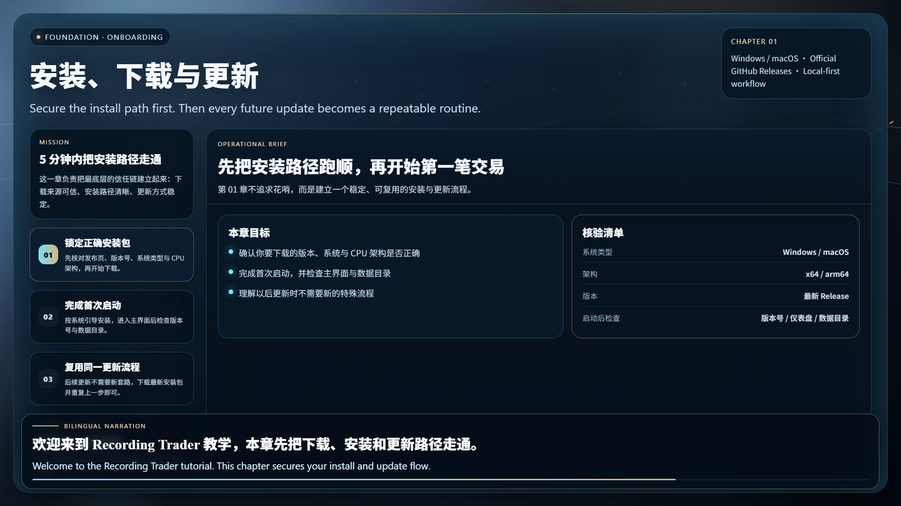

official tutorials
Recording Trader 官方教学视频
这套教程按真实使用顺序来讲，不做炫技式功能罗列。先完成正确下载、正确启动、正确更新，再进入工作区、盘前计划、第一笔订单与日报闭环。
已上线章节
推荐学习顺序
先把安装与更新路径跑顺
确保下载入口、安装包和更新方式都不出错，后面才不会被环境问题打断。
建立工作区地图
先知道每个页面解决什么，再进入具体操作，后面的章节理解会快很多。
先做盘前计划，再做单前检查
把纪律前置，让计划和门槛在下单之前就开始发挥作用。
完成第一笔订单到日报闭环
录单不是终点，回到 Journal、日报和 AI 总结之后，记录才真正有价值。
后续路线图
订单总览与复盘模式
继续讲清筛选、标签、卡片流和结构化复盘的使用方式。
知识库与 AI 工作流
覆盖知识沉淀、AI 对话、总结回流与跨模块联动。
系统回测
围绕策略 Case、样本记录、统计分析与复用流程展开。
备份迁移与虚拟助手
收尾讲清换机迁移、完整备份以及长期陪伴式能力。